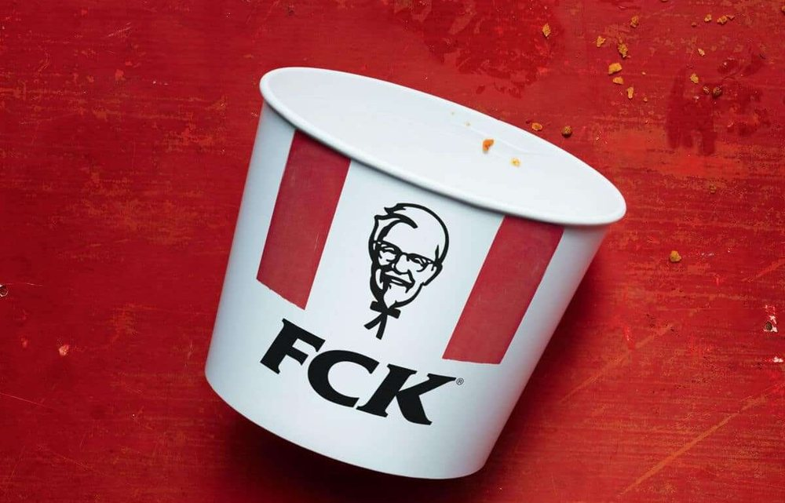

Zehn Minuten vor der Präsentation kippt der Kaffee über die Tastatur. Der Bildschirm wird schwarz, das letzte Backup ist drei Tage alt. Ruhig bleiben, Plan B aus der Tasche ziehen? Schön wär's. Der erste Reflex ist meistens ein anderer, und den fasst ein einziges Wort zusammen: Scheiße. Auf Englisch hat das Wort vier Buchstaben. KFC kam im Februar 2018 mit dreien aus und hat sie sogar ganzseitig in die Zeitung drucken lassen.

Der Auslöser klang zunächst harmlos: ein neuer Lieferdienst. Am 14. Februar 2018 übernahm DHL die Belieferung der rund 900 britischen KFC-Restaurants vom bisherigen Logistikpartner Bidvest. Statt mehrerer Lager gab es nun ein einziges zentrales Depot in Rugby. Die Lieferkette geriet ins Stocken: Fahrer warteten stundenlang darauf, aufs Gelände zu kommen, Lieferungen blieben aus, Hühnchen verdarb. Auf dem Höhepunkt der Krise waren mehr als 600 Restaurants geschlossen. Kentucky Fried Chicken ohne Chicken.
KFC antwortete mit einer ganzseitigen Anzeige in The Sun und Metro. Zu sehen war ein leerer Hühnchen-Eimer mit vertauschten Buchstaben: Statt „KFC“ stand dort „FCK“. Darunter folgte eine kurze Entschuldigung. Provozieren wollte man damit nicht. „Es ging nicht darum, einfach nur ‚Fuck!‘ zu sagen, sondern darum, die Aufmerksamkeit der Leute zu bekommen, damit wir uns entschuldigen konnten“, erklärte KFC-Marketingchefin Meghan Farren später (Deighton, 2018; eigene Übersetzung).
Eigentlich hätte man erwarten können, dass sich ein Konzern endgültig blamieren würde, wenn er ausgerechnet „FCK“ in seine Entschuldigung schreibt. Das Gegenteil war der Fall: Die Anzeige wurde in Medien und sozialen Netzwerken breit aufgegriffen und gilt bis heute als Paradebeispiel für Krisenkommunikation mit Humor. Warum dieser Witz nicht nach hinten losgegangen ist, führt zu der größeren Frage, um die es in diesem Beitrag geht: Wann helfen Gefühle in der Krisenkommunikation, und wann schaden sie?
01Emotionen und Emotionalisierung
Ob eine Entschuldigung wie die von KFC ankommt, hängt davon ab, welche Gefühle sie beim Publikum auslöst. Bevor wir uns die Anzeige genauer ansehen, lohnt sich deshalb ein kurzer Blick darauf, was Emotionen überhaupt sind. Vereinfacht gesagt sind es körperliche und mentale Reaktionen auf Reize aus unserer Umwelt (Dillard & Peck, 2001). Welche Emotion entsteht, hängt davon ab, wie wir eine Situation bewerten. Die Forschung nennt das Appraisal (Bagozzi et al., 1999, S. 185). Dieselbe Nachricht kann Person A wütend machen, während Person B nur mit den Schultern zuckt, weil beide andere Erfahrungen und Erwartungen mitbringen. Die Emotion prägt wiederum, was wir als Nächstes tun: Wer wütend ist, will sich beschweren, und wer Angst hat, sucht Sicherheit. Der Emotionspsychologe Nico Frijda nennt das Handlungsbereitschaft (Frijda, 1986, zit. nach Bagozzi et al., 1999, S. 187).
Die Theorie der diskreten Emotionen beantwortet die Frage, welche Emotionen es überhaupt gibt.1 Sie geht von einer Handvoll eigenständiger Grundemotionen aus, etwa Freude, Wut, Angst oder Trauer. Jede davon entsteht aus einem typischen Appraisal (Frijda, 1986; Lazarus, 1991; zit. nach Bagozzi et al., 1999, S. 185). Und jede hat eine eigene Funktion (Izard, 2009): Freude bestärkt uns, Angst macht vorsichtig, und Wut mobilisiert uns gegen das, was uns im Weg steht. Für die Krisenkommunikation ist das zentral, denn Wut löst zum Beispiel ganz andere Reaktionen aus als Freude oder Trauer.
Und gerade weil uns Emotionen so direkt beeinflussen, setzt auch die Kommunikation auf sie. Das nennt man Emotionalisierung: der gezielte Einsatz von Emotionen, um Aufmerksamkeit zu wecken, Einstellungen zu prägen oder Handlungen anzustoßen. Im Marketing ist das längst Alltag. In der PR ist die Sache etwas komplizierter. Werbung platziert ihre Botschaft selbst, PR ist dagegen oft auf Dritte angewiesen. Über soziale Medien können Unternehmen heute zwar direkt mit ihrem Publikum sprechen, gerade in Krisen bleibt aber die Berichterstattung der Medien entscheidend. Journalistinnen und Journalisten, Social-Media-Nutzerinnen und -Nutzer und die Öffentlichkeit entscheiden mit, wie eine Geschichte erzählt wird.
02Warum Krisen immer emotional sind
Eine Krise ist von Grund auf emotional. Die Gefühle sind schon da, bevor das betroffene Unternehmen sein erstes Statement veröffentlicht. Irgendwo ist ein Fuck-up passiert, und jetzt muss er ausgebügelt werden, meistens vom Unternehmen selbst. Die beste Krise ist natürlich die, von der nie jemand erfährt. Ist sie aber erst einmal öffentlich, muss das Unternehmen nicht nur den Betroffenen, sondern auch der Presse Rede und Antwort stehen. Für die Medien ist eine Krise im Grunde schon eine fertige Story: Es gibt Betroffene, einen Schuldigen und jede Menge Gefühle. Beeinflussen kann das Unternehmen nur noch, wohin sich diese Gefühle entwickeln.
Wie intensiv diese Gefühle ausfallen, hängt vor allem davon ab, wem die Öffentlichkeit die Schuld gibt. Hier setzt die Situational Crisis Communication Theory (SCCT) von Coombs (2007) an. Je mehr Verantwortung die Öffentlichkeit dem Unternehmen zuschreibt, desto größer wird die Wut und desto kleiner das Mitgefühl. Im Extremfall kommt sogar Schadenfreude dazu. Und wer wütend ist, wendet sich ab oder beschwert sich lautstark, etwa in den sozialen Medien.
Die Antwort auf die Schuldfrage steht allerdings nicht von Anfang an fest. Sie hängt auch davon ab, wie eine Krise geframt wird, also in welchen Rahmen sie gestellt wird. Krisenmanager versuchen deshalb, bestimmte Fragen in den Vordergrund zu rücken: Hat eine äußere Kraft die Krise ausgelöst? War es ein Versehen oder Absicht? Lag es an der Technik oder am Menschen? Es macht einen großen Unterschied, ob die Leute von einem Unfall, von Sabotage oder von grober Fahrlässigkeit ausgehen (Coombs, 2007). Coombs unterscheidet daher drei Gruppen: Krisen, in denen das Unternehmen selbst Opfer ist, etwa bei einer Naturkatastrophe; Unfälle, bei denen unbeabsichtigt etwas schiefgeht, zum Beispiel durch einen technischen Fehler; und vermeidbare Krisen, in denen das Unternehmen bewusst Risiken eingegangen ist oder gegen Regeln verstoßen hat. Das erklärt auch, warum sich KFC Humor leisten konnte: Ein Lieferengpass ohne Verletzte gehört eher in die mittlere Gruppe. Bei einer vermeidbaren Krise mit Geschädigten wäre ein Wortspiel undenkbar gewesen.
Wut und Mitgefühl entstehen erst, wenn die Öffentlichkeit über die Schuld urteilt. In den ersten Stunden einer Krise ist oft noch gar nicht klar, wer verantwortlich ist, und trotzdem empfinden die Menschen schon etwas. Yan Jin, Augustine Pang und Glen T. Cameron haben mit dem Integrated Crisis Mapping Model (ICM) untersucht, welche Emotionen Menschen in Krisen empfinden (Jin et al., 2012). Je nach Art der Krise erwarteten die Forschenden ein anderes Hauptgefühl. Ausgewertet wurde die Berichterstattung über 14 sehr unterschiedliche Krisen in den USA, von einem Akku-Rückruf über einen großen Stromausfall bis zu einem Amoklauf (S. 275). Fast überall trat aber zuerst dasselbe Gefühl auf: Angst (S. 286). Sie ist damit so etwas wie die Grundemotion von Krisen, zumindest solange unklar ist, wie gefährlich die Lage ist. Bei KFC war das anders: Ein Lieferengpass bedroht niemanden, hier dürfte von Anfang an der Ärger überwogen haben.
Für Unternehmen macht das kaum einen Unterschied, denn Angst und Ärger haben etwas gemeinsam: Beide wühlen auf. Wie wichtig das ist, zeigen Berger und Milkman (2012) in einer Studie dazu, welche Online-Inhalte besonders oft geteilt werden. Den Ausschlag gibt dabei, wie stark ein Gefühl uns aufwühlt, ganz gleich, ob es positiv oder negativ ist. Inhalte, die Angst, Wut, Staunen oder Belustigung auslösen, verbreiten sich besonders schnell. Inhalte mit eher lähmenden Gefühlen wie Trauer werden dagegen seltener geteilt. Berger und Milkman haben zwar keine Krisen untersucht, ihre Ergebnisse lassen sich aber gut übertragen: Angst und Ärger, also genau die Gefühle, die Krisen meist begleiten, gehören zu denen, die sich online am schnellsten verbreiten. Die fertige Story liefern die Medien, und die Aufregung des Publikums sorgt dafür, dass sie geteilt wird. Das erklärt, warum Krisen heute oft innerhalb weniger Stunden eskalieren. Wer als Unternehmen erst einmal abwartet, überlässt die Aufregung der Öffentlichkeit sich selbst, und die teilt sie weiter.
Daraus folgt zweierlei.2 Unternehmen müssen schnell reagieren, und sie müssen sich überlegen, welches Gefühl sie der Angst und dem Ärger der Öffentlichkeit entgegensetzen. Mit einem rein sachlichen Statement ist es dabei selten getan, denn auch Nüchternheit löst Gefühle aus, etwa den Eindruck, dem Unternehmen seien die Betroffenen egal. KFC hat einen anderen Weg gewählt und auf ein Gefühl gesetzt, das sich laut Berger und Milkman ebenso schnell verbreitet: Belustigung. Wie das im Detail funktioniert, schauen wir uns im nächsten Abschnitt an.
03Was steckt hinter dem leeren Eimer?
Die Ausgangslage war denkbar schlecht: Hunderte Restaurants waren geschlossen, und manche Kundinnen und Kunden riefen sogar die Polizei. Trotzdem ist aus der Krise eine Geschichte geworden, über die heute vor allem positiv gesprochen wird. Beim Werbefestival Cannes Lions gewann die Anzeige 2018 sogar Gold in der Kategorie Print & Publishing (Degun, 2018). Woran man Emotionalisierung in der Krisenkommunikation erkennt, lässt sich an der Zeitungsanzeige gut zeigen (siehe Anhang). Opiłowski (2020) nennt dafür eine Reihe von Merkmalen, die sich hier fast alle wiederfinden:
angewendet auf die FCK-Anzeige
Gefühlswörter, wertende Adjektive, Übertreibungen, Metaphern und Vergleiche (S. 215).
Bei KFC sind das „Huge apologies“ und „a hell of a week“, also Umgangssprache statt Konzerndeutsch.
Ironie, Anspielungen, Wortspiele und Doppeldeutigkeiten. Sie wirken oft stärker als offen gezeigte Gefühle, weil man ihnen weniger leicht vorwerfen kann, „zu emotional“ zu sein (S. 219).
Bei KFC tragen das FCK-Wortspiel und die trockene Untertreibung „A chicken restaurant without any chicken. It's not ideal.“ die ganze Anzeige.
Fotos, Farben, Nahaufnahmen und Musik transportieren Gefühle, ohne dass ein Wort fällt (S. 215).
Bei KFC zeigt ein leerer Eimer in den Markenfarben Rot und Weiß die Panne auf einen Blick.
Im Mittelpunkt stehen Menschen und Konflikte statt abstrakter Sachverhalte (Burger & Luginbühl, 2014, zit. nach Opiłowski, 2020, S. 213).
Bei KFC spricht die Marke selbst im „Wir“. Trotzdem geht es um Menschen: die Gäste, die umsonst zu einem geschlossenen Restaurant gefahren sind, und die Mitarbeitenden, denen die Anzeige ausdrücklich dankt.
Verbindet die Botschaft (Gemeinschaft, Dankbarkeit, Hoffnung) oder grenzt sie ab (Wut, Angst, Schuld)? (Döveling, 2005, zit. nach Opiłowski, 2020, S. 214–215).
Bei KFC wirkt die Botschaft eindeutig verbindend: Die Anzeige entschuldigt sich bei den Gästen und dankt dem Team. Wut oder Schuldzuweisungen kommen nicht vor.
Auch Schweigen und Auslassungen können emotionalisieren. Darum lohnt sich immer die Kontrollfrage: Was fehlt? (S. 220)
Bei KFC fehlt DHL. Der neue Lieferdienst wird mit keinem Wort erwähnt, und die Ursachen der Panne bleiben offen. KFC bedauert also, übernimmt aber keine konkrete Schuld.
Begleitet das Gefühl die Information, oder dominiert es die ganze Botschaft? (S. 215)
Bei KFC steht das Bild im Vordergrund, die Informationen gehen dabei aber nicht verloren. Unter dem Eimer stehen die Entschuldigung, ein kurzer Zwischenstand und der Hinweis auf eine Website, auf der man nachsehen konnte, ob die eigene Filiale geöffnet hat.
Für den Humor spricht auch ein Experiment von Berger und Milkman (2012): Je stärker eine Werbekampagne die Teilnehmenden belustigte, desto eher wollten sie sie teilen (S. 200). Ob das auch für Entschuldigungen in Krisen gilt, ist zwar nicht untersucht. Mit Humor hat KFC aber gewissermaßen Feuer mit Feuer bekämpft: Der Ärger über die geschlossenen Restaurants verbreitete sich online schnell, und die Anzeige setzte etwas dagegen, das sich genauso schnell verbreitete.3 Begeisterung war das sicher nicht, aber deutlich besser als die Stimmung davor.
Kritisch lässt sich einwenden, dass die Anzeige die Krise noch bekannter gemacht hat.4 Allerdings war die Panne zu diesem Zeitpunkt längst landesweit in den Nachrichten, denn die Anzeige erschien erst gut eine Woche nach Beginn der Krise. Kaum jemand hat also erst durch sie davon erfahren. Verändert hat die Anzeige vor allem, worüber gesprochen wurde: Statt über geschlossene Restaurants berichteten Medien und soziale Netzwerke jetzt über die Entschuldigung. Das ist genau das Framing aus dem Krisenteil: KFC konnte die Krise nicht mehr aus den Schlagzeilen holen, hat mit der Anzeige aber mitbestimmt, in welchem Licht sie dort steht. Die zusätzliche Aufmerksamkeit hat dem Unternehmen deshalb eher genützt.
04Ist das noch echt?
KFC ist ein Konzern und will Geld verdienen. Das allein macht eine Entschuldigung aber noch nicht unehrlich. Der Deutsche Kommunikationskodex erlaubt PR ausdrücklich, „konsequent die Partei ihrer Arbeit- oder Auftraggeber“ zu ergreifen, solange sie dabei transparent arbeitet und auf unredliche Praktiken verzichtet (DRPR, 2012). Die Grenze zieht der Kodex bei der Wahrhaftigkeit: PR darf keine falschen oder irreführenden Informationen verbreiten, und sie darf das Vertrauen der Öffentlichkeit nicht missbrauchen. Außerdem soll sie durch Argumente überzeugen. Hinter der FCK-Anzeige standen zudem Menschen, die die Krise selbst mitgenommen hat. Farren erzählt, dass ein Drittel ihres Marketingteams in dieser Zeit im Verteilzentrum in Rugby mitarbeitete, in Kühl- und Gefrierräumen (Deighton, 2018).
Schwieriger wird es, wenn Gefühle Verantwortung ersetzen sollen. Rechtsabteilungen bremsen Entschuldigungen oft, weil sie als Schuldeingeständnis gelten könnten. Ein Ausweg ist die teilweise Entschuldigung, die nur Bedauern und Mitgefühl ausdrückt, ohne Schuld einzuräumen. Juristisch ist sie deutlich unbedenklicher als ein volles Schuldeingeständnis (Patel & Reinsch, 2003, S. 21–22). Der Kodex beschreibt diesen Konflikt unter dem Stichwort Loyalität: PR vertritt die Interessen ihres Auftraggebers und bewahrt ihn vor Schaden, aber nur, soweit sie dabei keine ethischen Normen verletzt (DRPR, 2012). Wer Bedauern zeigt, um Verantwortung zu vermeiden, überschreitet diese Grenze.
05Helfen oder schaden?
homeDefinition
Am Anfang haben wir Emotionalisierung als gezielten Einsatz von Emotionen beschrieben. Nach dem Blick auf KFC lässt sich das genauer fassen: Emotionalisierung steigert und bündelt Gefühle in einer Botschaft, und diese Gefühle können die Information begleiten oder ganz in den Vordergrund rücken (Opiłowski, 2020, S. 215). In Krisen fängt sie allerdings nie bei null an, denn die Gefühle sind schon da. Emotionalisierung kann also nur noch beeinflussen, welche davon sich durchsetzen.
Helfen können Gefühle vor allem dann, wenn sie zur Art der Krise und zur Stimmung des Publikums passen. Wer die Verantwortung trägt, sollte sie auch emotional übernehmen. Bei vermeidbaren Krisen senkt ein offenes Schuldeingeständnis die Wut und stärkt das Mitgefühl (Grappi & Romani, 2015). Außerdem überzeugen Botschaften eher, wenn sie die Gefühlslage des Publikums treffen, statt an ihr vorbeizureden (Nabi, 2010, S. 157). Und die Reihenfolge muss stimmen: Zuerst brauchen die Betroffenen Informationen und Anteilnahme, erst danach geht es um den Ruf des Unternehmens (Coombs, 2007, S. 165).
Schaden können Gefühle zunächst, wenn sie nicht zur Lage passen. Je weiter die Reaktion des Unternehmens und die Art der Krise auseinanderliegen, desto stärker treibt die Wut negative Reaktionen an. Daran ändert auch ein guter Ruf nichts (Grappi & Romani, 2015).5 Ein Beispiel dafür, wie es nicht laufen sollte, lieferte BP-Chef Tony Hayward im Mai 2010. Bei der Explosion der Ölplattform Deepwater Horizon waren elf Arbeiter gestorben, seit Wochen lief Öl in den Golf von Mexiko. Vor Reportern entschuldigte sich Hayward bei den Menschen an der Küste und versicherte, niemand wolle das Ende der Krise mehr als er. Sein nächster Satz: „I'd like my life back.“
„I'd like my life back.“
Gemeint war vielleicht Erschöpfung, angekommen ist Selbstmitleid, und das in einer Krise mit Todesopfern. Wenige Tage später musste Hayward sich für diesen Satz entschuldigen (HuffPost, 2010a, 2010b). Gefühle schaden auch, wenn sie zu stark dosiert sind. Stark emotionalisierte Inhalte bleiben zwar besser hängen, aber Hintergrundinformationen gehen dabei verloren (Schramm & Wirth, 2006, S. 40). In einer Krise können das genau die Informationen sein, die Betroffene brauchen. Und schließlich schaden Gefühle, wenn sie an die Stelle von Inhalten treten. Bei emotional geframter Krisenkommunikation macht es kaum noch einen Unterschied, ob die Reaktion inhaltlich zur Krise passt (Claeys & Cauberghe, 2012, zit. nach Grappi & Romani, 2015). Gefühle können also überdecken, was eigentlich gesagt wird. Das ist Chance und Risiko zugleich, denn dieselben Mittel, die eine ehrliche Entschuldigung tragen, dienen auch der Manipulation (Opiłowski, 2020, S. 220).
Unterm Strich sind Gefühle in der Krisenkommunikation weder ein verzichtbares Extra noch ein Ersatz für Inhalt. Sie sind das Transportmittel, und was ankommt, hängt davon ab, was man auflädt.